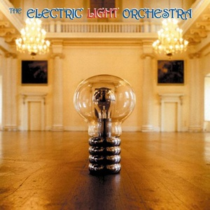

Can
Tago Mago
8¾

Serge Gainsbourg
Histoire de Melody Nelson
8¾

David Bowie
Hunky Dory
8½

Led Zeppelin
Led Zeppelin IV
8½

Joni Mitchell
Blue
8¼

Comus
First Utterance
8

Faust
Faust
8

Pink Floyd
Meddle
8

Popol Vuh
In den Gärten Pharaos
8

Françoise Hardy
Françoise Hardy (La Question)
7¾

Funkadelic
Maggot Brain
7¾

Sly & The Family Stone
There's a Riot Goin' On
7¼

T. Rex
Electric Warrior
7¼

Black Sabbath
Master of Reality
7

Marvin Gaye
What's Going On
7

Caetano Veloso
Caetano Veloso
6¾

Yes
Fragile
6¾

Genesis
Nursery Cryme
6¾

King Crimson
Islands
6¾

Chico Buarque
Construção
6½

Captain Beefheart & His Magic Band
Mirror Man
6½

Alice Coltrane / Pharoah Sanders
Journey in Satchidananda
6½

Gil Scott-Heron
Pieces of a Man
6

David Bowie
The Man Who Sold the World
6

John Coltrane
Sun Ship
5¾

Elton John
Madman Across the Water
5¾

The Rolling Stones
Sticky Fingers
5¾

Leonard Cohen
Songs of Love and Hate
5¾

Rod Stewart
Every Picture Tells a Story
5¾

Jethro Tull
Aqualung
5½

The Doors
L.A. Woman
5½

Carole King
Tapestry
5½

John Lennon
Imagine
5¼

Pharoah Sanders
Thembi
5¼

The Who
Who's Next
5

Yes
The Yes Album
4¾

Paul McCartney / Linda McCartney
Ram
4¾

Status Quo
Dog of Two Head
4¾

Earth, Wind & Fire
Earth, Wind & Fire
4¾

Soft Machine
Fourth
4½

Fela Kuti
Open & Close
4½

Van Morrison
Tupelo Honey
4¼

Miles Davis
A Tribute to Jack Johnson
4¼

Magma
1001° Centigrades
4¼

John Cale / Terry Riley
Church of Anthrax
4¼

Herbie Hancock
Mwandishi
4

Bonnie Raitt
Bonnie Raitt
4

Ennio Morricone
Giù la Testa
4

Alice Cooper
Love It to Death
4

Dolly Parton
Coat of Many Colors
3¾

Jeff Beck Group
Rough and Ready
3¾

Tangerine Dream
Alpha Centauri
3¾

Wings
Wild Life
3¾

Alice Coltrane
Universal Consciousness
3¾

Alice Cooper
Killer
3¾

Fairport Convention
"Babbacombe" Lee
3¾

Robbie Băsho
Song of the Stallion
3¾

Graham Nash
Songs for Beginners
3¾

Fairport Convention
Angel Delight
3¾

Halfnelson
Halfnelson
3½

Fela Kuti
Fela's London Scene
3½

Deep Purple
Fireball
3½

Fleetwood Mac
Future Games
3½

The Doors
Other Voices
3½

Fela Kuti
Why Black Man Dey Suffer
3½

MC5
High Time
3½

The Last Poets
This Is Madness
3¼

Piero Umiliani
La Ragazza dalla Pelle di Luna
3¼

Bob Marley & The Wailers
Soul Revolution
3¼

Sweet
Funny How Sweet Co-Co Can Be
3¼

Bill Evans
The Bill Evans Album
3

Labi Siffre
The Singer and the Song
3

Niagara
Niagara
3

Earth, Wind & Fire
The Need of Love
3

Fela Kuti
Fela Fela Fela
3

Electric Light Orchestra
The Electric Light Orchestra
3

Thin Lizzy
Thin Lizzy
2¾

Bill Evans
From Left to Right
2¾

Fela Kuti
Na Poi
2¾

Kim Min-Gi
Kim Min-Gi
2½

Daevid Allen
Banana Moon
2½

Stevie Wonder
Where I'm Coming From
2½

Rodriguez
Coming From Reality
2½

Gilbert O'Sullivan
Himself
2½

Cher
Gypsys, Tramps & Thieves
2½

Dolly Parton
Joshua
2½

Carlos Paredes
Movimento Perpétuo
2¼

Tucker Zimmerman
Tucker Zimmerman
2¼

Johnny Cash
Man in Black
2

The Wailers
The Best of The Wailers
2

Tom Jones
She's a Lady
1¼

Frank Zappa
200 Motels
1

REO Speedwagon
REO Speedwagon
1

Stoney & Meatloaf
Stoney and Meatloaf
1

Reiko Ike
Koukotsu no Sekai
0¾

The O'Jays
Super Bad
0¾